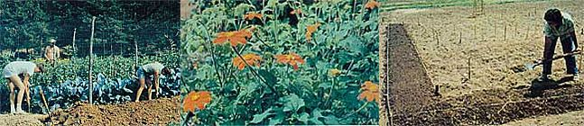
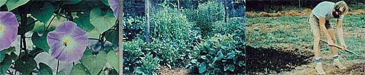

In 1980, MOTHER's gardens hosted 25 eager apprentices. And now, for the 1981 season, we are extending an open invitation to all of our readers to...
If you have already read about Alan Chadwick and his important contributions to horticulture (see the tribute on page 70 in MOTHER NO. 66), you'll be glad to know that - although the man is gone - his world-renowned wholistic gardening technique lives on!
MOTHER's staff is very pleased to announce another series of workshops based - i n part - upon Chadwick's methods of biodynamic/French intensive gardening . . . which will be held this spring, summer, and fall (April 20-29, May 4-13, June 1-10, August 31-September 9, and September 28-October 7) on our beautiful 622.4 acres of mountain property in western North Carolina.
Master gardeners Kerry and Barbara Sullivan - both of whom are former apprentices of Alan Chadwick and now fulltime members of MOTHER's Eco-Village staff - will guide workshop participants through a full ten days of theory, technique, and actual practice in MOTHER's organic gardens.
All those who attend will learn about preparation of raised beds, sowing and transplanting, and needed maintenance such as weeding and watering . . . all of which will involve plenty of hands-on experience. Planned discussions with Kerry and Barbara will include advice on compost, seedlings, greenhouses, potting soils, cold frames, and more!
The fee for each session will be $150, with camping facilities (but not meals) provided for the participants. Because of the intense treatment of the subject matter and the long hours involved in getting hands-on experience in the gardens (this is to be a work shop), Kerry and Barbara have stipulated that no families or pets be brought along for the sessions.
If you'd like to obtain more information or register for one of the workshops, write to Kerry and Barbara Sullivan, THE Mother Earth News (restricted) , P.0.
Box 70, Hendersonville, North Carolina 28791 (please include a self-addressed, stamped envelope). W e hope to share our garden with you this year!
|
 |
 |
|